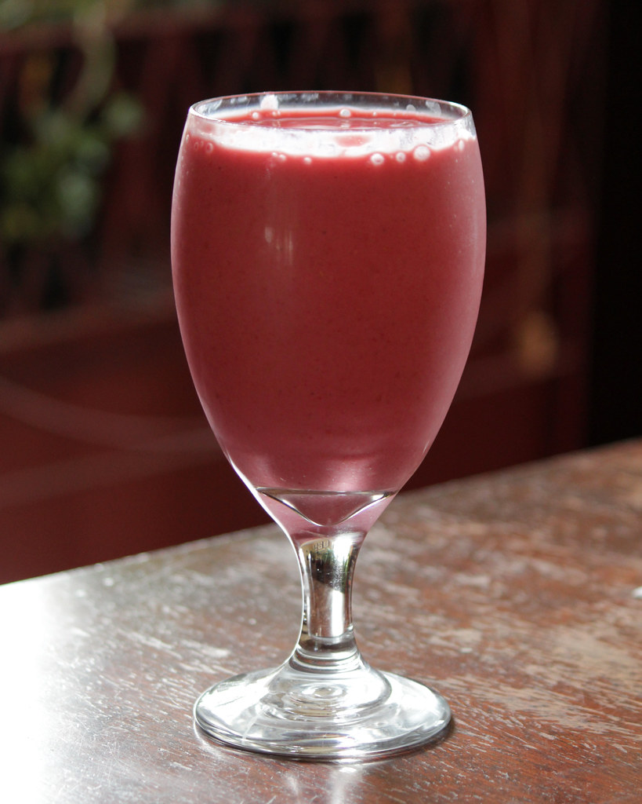

Strawberry Banana Smoothie?

("strawberry smoothie" by woodleywonderworks is licensed under CC BY 2.0)
Hello! I am Gabe and I'm gonna teach you how to make a very good strawberry banana smoothie! (Serves 1 Person)
This recipe is important to me as my little brother is a very picky eater, and we wanted to make a smoothie that was "close enough" to McDonalds and therefore he'd eat it.
It's not McDonalds, but... It's ALMOST there.
- Christian Haynes
Ingredients/Materials Needed:
| Ingredients |
Amount Needed |
| Sliced Strawberries and Bananas |
1 and 1/2 Cups |
| 2% Milk |
1/3 Cup |
| Vanilla Greek Yogurt |
1/2 Cup |
| Crushed Ice |
Personal Preference |
| [OPTIONAL] Strawberry Syrup |
1 "Dash" |
Step-by-Step
First things first, you'll need yourself a blender, a sturdy sandwich bag, and a rolling pin or something hard.
How should you put the ingredients in?
- Put all wet ingrdients first, start with the milk and add the yogurt in.
- Blend together for up to 10 seconds just to mix it all up.
- Add in the slice fruit in around 1/2 cup increments. Blend each time until left with minimal chunks
- Put some ice in a sandwich bag and beat it with something hard until it's in blendable chunks
- Blend until ice is there but not there if you get what I mean (Like you can chew the ice but not crunchy)
- Put in a cup, serve with a big straw.
- [OPTIONAL] Add a dash of strawberry syrup in the cup, mix in with straw or a spoon
Tips and Tricks
- When blending together the milk and yogurt, blend for 3-5 seconds instead of 10 for a thicker smoothie
- Freeze fruit beforehand if you want more of a fruit slushie texture
- Add more or less milk for consistency purposes
Final Extra Details Mr. Jones Asked For